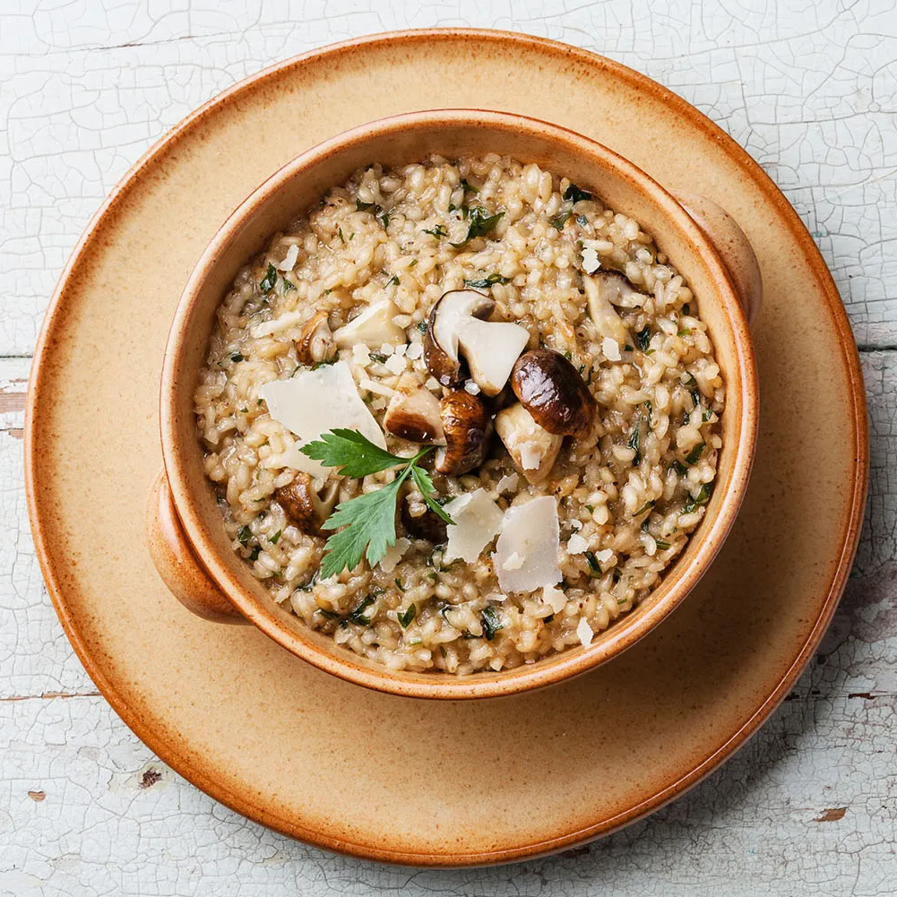

Risotto ai Funghi

This risotto recipe is classic and straightforward,
with no additional vegetables or proteins. You can serve it as a side dish and add a protein on top, or a main dish with cooked protein and vegetables integrated into the rice.
The most important part of risotto? Finding the correct type of rice.
Ingredients:
- Arborio rice
- Vegetable or chicken broth
- White wine
- Onion and garlic
- Butter and olive oil
- Pecorino Romano cheese
Process to make the risotto:

- Fried the vegetebales
- Toast the rice
- Continue with the process... I'm lazy to finih this part
Back To Top
Back To Main Page